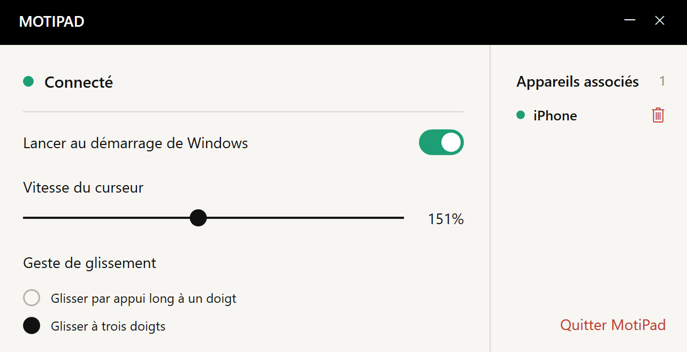

GAGNEZ DE LA PLACE
Pas de place pour la souris ?
Vos doigts peuvent bouger.
Inutile de dégager une surface pour déplacer une souris. Faites glisser vos doigts sur le téléphone pour déplacer le pointeur de l’ordinateur.
Moins de place. Un accessoire en moins.
Vos gestes habituels, sur votre téléphone.


Une table de café, un espace de travail improvisé ou une journée où vous voyagez léger. Emportez votre pavé tactile dans l’iPhone que vous avez déjà sur vous.
Inutile de dégager une surface pour déplacer une souris. Faites glisser vos doigts sur le téléphone pour déplacer le pointeur de l’ordinateur.
Envie de laisser la souris ou le pavé tactile à la maison ? Confiez une tâche de plus à votre iPhone.
Déplacez, touchez et faites défiler avec deux doigts.
Une surface simple pour rester concentré sur l’essentiel.
Vous déplacez un fichier sur un grand écran et atteignez le bord du téléphone ? Levez brièvement le doigt, reposez-le et continuez.
Associez vos ordinateurs habituels, puis choisissez celui à contrôler dans le menu du téléphone. Changez d’espace de travail et continuez.
Ajoutez vos ordinateurs habituels à la liste.
Changez d’ordinateur depuis le menu.
Contrôlez un ordinateur à la fois.
Ouvrez MotiPad pour déplacer le pointeur, faire défiler et faire glisser depuis le téléphone.
Installez le récepteur et associez les appareils sur le même réseau local. Réglez la vitesse du pointeur et les gestes de glissement sur l’ordinateur.
Les liens officiels vers l’App Store et le récepteur Windows seront publiés ici.
Besoin d’aide, signalement d’un problème ou suggestion : écrivez-nous.
eziojobs01@gmail.com